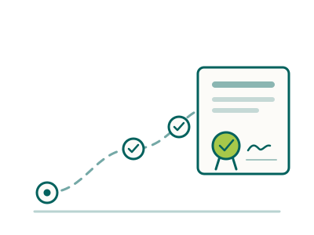

Stage 04 · Can I work there? · ASMIRT and the Australian Sonographer Accreditation Registry
Becoming an accredited sonographer
For internationally qualified sonographers. Sonography is not an Ahpra profession: one organisation assesses your qualification, a second accredits you to practise, and the order matters. The checklist is built into the page, so nothing you tick goes out of date.
Kettle on. A longer read — about 14 min
At a glance
Sonography is not a protected title under the National Scheme, so there is no Ahpra board. The route is ASMIRT → ASAR.
ASMIRT issues a Certificate of Recognition in Ultrasound; that certificate supports your ASAR accreditation. Starting the second before the first is complete wastes time.
An Accredited Medical Sonographer can perform scans that attract Medicare rebates. That is why employers need it — whatever your experience.
If ASMIRT finds your qualification short, the ask is further evidence, more clinical experience or further education — unlike radiography, there is no standard exam to sit.
What’s inside
Shorter than the Ahpra guides, because the route is simpler than it sounds. Read it once, then return to each section as you reach it. The checklist at the end remembers what you have ticked, on this device.
Section 01
Why sonography is different
Sonographers do not follow the Ahpra registration pathway. Ahpra, through the Medical Radiation Practice Board, registers diagnostic radiography, radiation therapy and nuclear medicine — not sonography.
Instead, two organisations share the job. ASMIRT assesses your overseas qualification and experience and, if satisfied, issues a Certificate of Recognition in Ultrasound. ASAR then accredits you as a practitioner, and that accreditation is what lets you scan under Medicare. Public departments and private practices need an accredited sonographer for exactly that reason, so accreditation is not a formality on top of the job — it is the job.
ASMIRT first, then ASAR. ASAR will not accredit you without the ASMIRT certificate, whichever visa you are on — so a well-evidenced ASMIRT application is where almost all of the time you can save actually sits.
Section 02
Step one: ASMIRT assesses your qualification
The Australian Society of Medical Imaging and Radiation Therapy is the gateway. It assesses your qualification against the Australian standard as it stood when you qualified, and reaches one of three outcomes.
Unconditional recognition
Your qualification and experience meet the standard. The Certificate of Recognition in Ultrasound is issued and you move to ASAR.
Conditional
Recognition subject to further evidence or additional clinical experience first. The ask is specific; meet it and the certificate follows.
Not recognised
The qualification does not currently support recognition. Unlike radiography there is no standard exam to sit instead — the route back is further evidence, more clinical experience or further education.
What ASMIRT needs from you
Your qualification and transcript
- Why
- The basis of the assessment — what you studied, and against which standard.
- Provide
- Your ultrasound qualification and the full academic transcript: subjects, results and the grading system.
- Tip
- Clean colour scans, certified where required, consistent file names.
Recent clinical scanning practice
- Why
- Recency matters. Skills fade when unused, and ASAR applies its own recency rule later.
- Provide
- Evidence of recent clinical ultrasound practice — dates, settings and the modalities you scan.
- Mistake
- A CV that lists roles without making the scanning hours and modalities clear.
Professional references
- Why
- Independent confirmation of what you say you have done.
- Provide
- References confirming roles, dates and modalities, from employers or supervisors who can speak to your scanning.
- Tip
- Brief your referees on what ASMIRT wants confirmed; a warm but vague letter helps no one.
Where and what you studied decides which outcome is likely, and we will tell you honestly before you pay an assessment fee. The decision itself is ASMIRT’s.
Section 03
Step two: ASAR accredits you
Your ASMIRT recognition supports your accreditation with the Australian Sonographer Accreditation Registry. Alongside the certificate, ASAR expects three things.
- 1
Your ASMIRT Certificate of Recognition in Ultrasound
Required. ASAR does not accredit without it.
- 2
Citizenship, permanent residency or a valid Australian working visa
You must be an Australian or New Zealand citizen, a permanent resident, or hold a valid Australian working visa.
- 3
Recency of practice
If your ASMIRT certificate is more than three years old, ASAR generally expects evidence of about a year part-time or six months full-time in clinical ultrasound within the last three years. If you cannot meet that, its return-to-practice policy applies instead.
If you are accredited on a working visa, each year’s renewal depends on showing ASAR a valid visa for that year — build it into your calendar alongside your CPD.
Section 04
Visas, and how the two connect
The ASMIRT certificate does double duty. It is what ASAR needs, and for a skilled-migration visa it also supports the skills assessment the Department of Home Affairs requires.
Most sonographers we place move on an employer-sponsored 482 instead, where the employer sponsors the role and you work toward accreditation alongside. Either way we work with licensed migration advisers; which visa suits you, and what it requires, is their call and Home Affairs’ — not ours, and not ASAR’s.
The route most of the sonographers we place take
The employer sponsors the role. You still need the ASMIRT certificate for ASAR, and your accreditation is renewed each year against a valid visa.
Points-tested, independent of an employer
The same ASMIRT certificate supports the skills assessment Home Affairs requires. Accreditation still follows through ASAR once you hold the visa or residency.
Section 05
English and identity
Two things that do not decide the outcome but can hold it up.
Certified identity documents — passport, and evidence of any name change if your name differs across documents — go in with both applications, together with certified translations of anything not in English. English-language evidence is required where your visa or employer requires it: check what applies to you before booking any test, and if you need one, time it so the result is still valid when it is needed.
Assembling ASMIRT evidence takes time, so an early test can expire before it is used. Confirm the requirement and the validity period first.
Section 06
Applying, and what happens next
- 1
Confirm the route and your visa pathway
ASMIRT then ASAR; employer-sponsored or skilled migration. The certificate serves both.
- 2
Assemble your ASMIRT evidence
Qualification, transcript, recent scanning practice, references, identity — clean, certified, well named.
- 3
Apply to ASMIRT and pay the fee
Then wait for one of the three outcomes. Respond promptly and completely to any request for more.
- 4
Certificate of Recognition in Ultrasound issued
Keep it safe; ASAR and, for some visas, Home Affairs rely on it.
- 5
Apply to ASAR
With the certificate, your visa or residency evidence, and recency evidence if the certificate is over three years old.
- 6
Accredited Medical Sonographer
You can scan under Medicare. Renew annually, keep your CPD current.
- 7
Role, sponsorship and the move
Coordinate timelines with your employer. Do not resign or book anything until ASMIRT recognition is confirmed.
Months, not weeks
And the order matters. A complete, well-evidenced ASMIRT application is the biggest factor within your control; starting ASAR before ASMIRT is complete saves nothing.
Budget for real fees
The ASMIRT qualification assessment, ASAR accreditation and its annual renewal, plus any English test and document certification. Amounts are not printed here — both organisations publish and revise them.
Where people get stuck
Almost every avoidable delay traces back to one of these
Applying to Ahpra
There is no Ahpra board for sonography. The route is ASMIRT then ASAR.
Starting ASAR before ASMIRT is complete
ASAR will not accredit without the certificate. Sequence, not parallel.
Vague recency evidence
A CV that does not make recent scanning hours and modalities clear — to ASMIRT now, and to ASAR later if the certificate ages past three years.
Referees who cannot speak to your scanning
References must confirm roles, dates and modalities, not just character.
Assuming an exam can rescue a shortfall
Unlike radiography there is none. A conditional outcome asks for evidence, experience or education.
Letting the visa lapse at renewal
Accreditation on a working visa renews each year against a valid visa.
The fix for all of these
Confirm the route, get the ASMIRT evidence right first, line accreditation up with the role and the visa, and have it read by someone else before you submit.
Section 08
The questions we are asked most
Do sonographers register with Ahpra?
No. Sonography is not a protected title under the National Scheme, so there is no Ahpra board for it. The route is ASMIRT recognition of your qualification, then accreditation with the Australian Sonographer Accreditation Registry. Ahpra, through the MRPBA, registers diagnostic radiography, radiation therapy and nuclear medicine.
Will my overseas qualification be recognised?
That depends entirely on where and what you studied. ASMIRT assesses your qualification against the Australian standard as it stood when you qualified, with three possible outcomes: unconditional recognition; conditional, meaning further evidence or additional clinical experience first; or not recognised. Unlike radiography there is no standard exam you can simply sit if it falls short.
Do I need the ASMIRT assessment whichever visa I am on?
Yes. ASAR will not accredit you without it. It does double duty: for a skilled-migration visa (189, 190 or 491) the same certificate supports the skills assessment Home Affairs requires. On an employer-sponsored 482 the employer sponsors the role and you work toward accreditation alongside.
Can I be accredited before I have a visa?
ASAR expects you to be an Australian or New Zealand citizen, a permanent resident, or to hold a valid Australian working visa. If you are accredited on a working visa, each year’s renewal depends on showing ASAR a valid visa for that year.
What is the recency rule?
If your ASMIRT certificate is more than three years old, ASAR generally expects evidence of about a year part-time or six months full-time in clinical ultrasound within the last three years. If you cannot meet that, its return-to-practice policy applies instead.
Why does accreditation matter so much?
Because it is tied to Medicare. An Accredited Medical Sonographer can perform scans that attract Medicare rebates, which is what public departments and private practices need from you. Without it the role does not work, whatever your experience.
How long does it take?
Months rather than weeks, and the order matters: ASMIRT first, then ASAR. Starting the second before the first is complete wastes time. A complete, well-evidenced ASMIRT application is the biggest factor within your control.
Can Ethicare review my application?
Yes. We review your qualification and experience evidence against what ASMIRT looks for, flag likely issues while they are easy to fix, and line the accreditation up with the role and the visa so they do not hold each other up. The decisions rest with ASMIRT and ASAR.
Section 09
The whole journey on one page
From first decision to first scan. Each stage links to the section that explains it; the checklist tracks the same stages.
- Before you start
Confirm the route
ASMIRT then ASAR — not Ahpra. Section 01
- Before you start
Decide the visa pathway
Employer-sponsored or skilled migration; the certificate serves both. Section 04
- Preparing
Assemble ASMIRT evidence
Qualification, transcript, recent scanning practice, references. Section 02
- Applying
ASMIRT assessment
One of three outcomes; respond fully to any request. Section 02
- Milestone
Certificate of Recognition in Ultrasound
The document everything else relies on.
- Applying
ASAR accreditation
Certificate, visa or residency, recency if needed. Section 03
- Decision
Accredited Medical Sonographer
Scan under Medicare; renew annually.
- Then
Role, sponsorship and the move
Where accreditation hands over to planning your move.
The checklist
Twenty-two items, in the order you will meet them
Tick as you go. Ticks are saved on this device only — nothing is sent to us — and the list is always the current version, which a downloaded copy never is.
01Before you start
Get the shape of the route clear before you spend money.
02ASMIRT qualification assessment
The gateway. Get this moving first.
03Identity and English
Confirming who you are, and your English where it is required.
04ASAR accreditation
Your ASMIRT recognition supports the application.
05Accredited, and after
What follows accreditation.
What next?
Accreditation is one part of the decision
How we help
We line accreditation, the role and the visa up so they don’t hold each other up
We review your qualification and experience evidence against what ASMIRT looks for, flag likely issues while they are still easy to fix, and coordinate the sequence with your employer and a licensed migration adviser. The decisions rest with ASMIRT and ASAR.